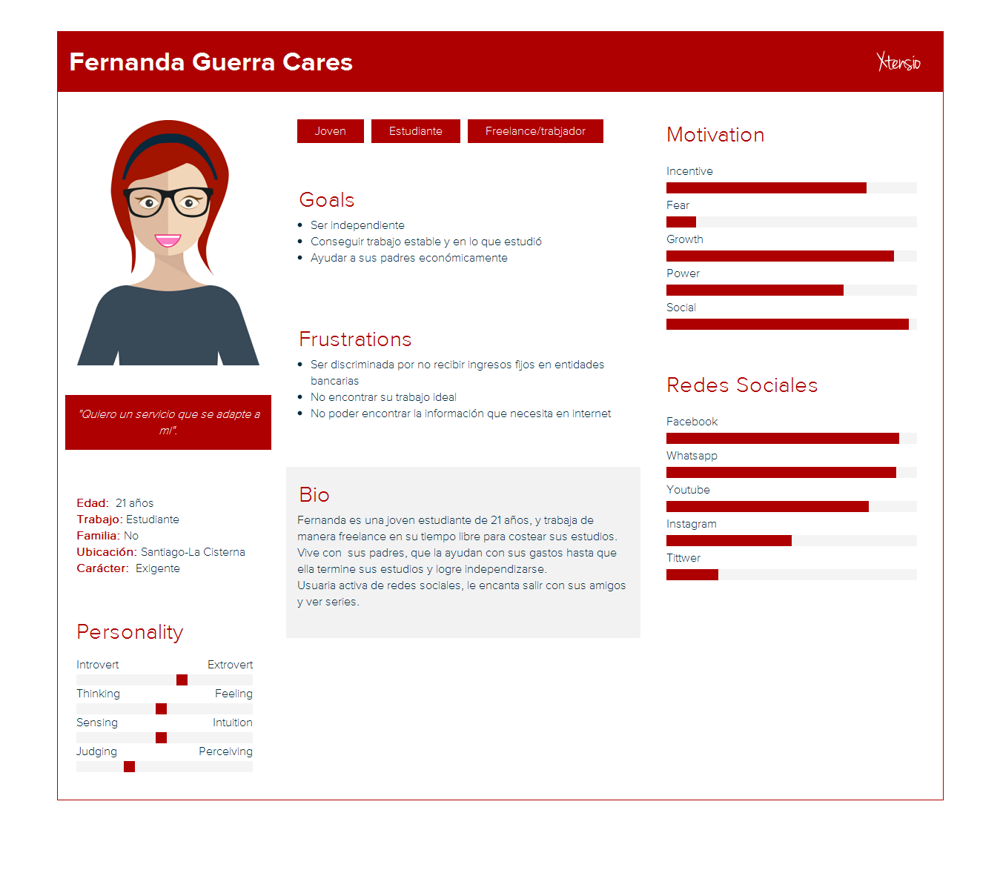
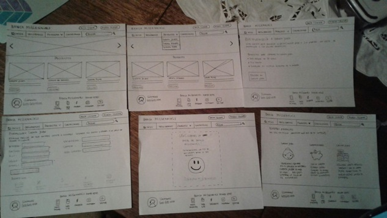
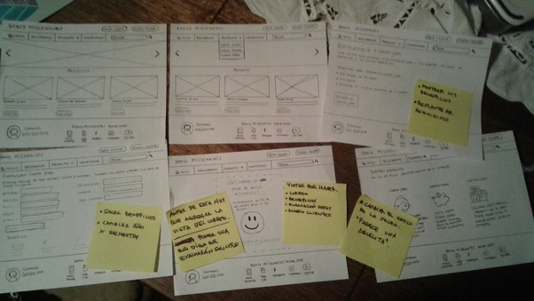

Banca
Millennials
Banca Millennials es una plataforma digital sencilla y rápida, dirigida a los jóvenes millennials. Que busca acercarlos más al mundo bancario y poder disfrutar de servicios y beneficios.
Descubrimiento e Investigación
Comenzamos investigando a la generación millennials, para poder crear una guía de entrevistas adecuada para ellos, y poder lograr levantar la mayor cantidad de información. Así poder conocer sus intereses, miedos y frustraciones; qué es lo que esperan de la banca actual o qué no los tiene satisfechos.
Etapa de Research
Realizamos entrevistas a usuarios, desarrollamos una encuesta online utilizando la herramienta de Google Form y también complementamos nuestros hallazgos con una pregunta abierta en facebook.
Síntesis y Definición
Nos reunimos en clase a revisar la información obtenida para poder sacar nuestras primeras conclusiones.
Conclusiones de las entrevistas
- Todos los entrevistados tenían por lo menos una cuenta rut del Banco Estado.
- La razón por la que tenían esa cuenta era por la facilidad para obtenerla.
- Se cambiarían de banco si les ofrecieran un mejor servicio y mayores beneficios.
Conclusiones de las encuestas
- Inconformidad con los cobros (giros, mantención), tienen pésimo servicio (presencial) a final de mes; y la aplicación móvil de un banco específico realiza cargos al realizar movimientos con la cuenta.
- Fines de mes el sistema colapsa y la página está caída, al transferir no se realiza el proceso y en un navegador (Chrome) no deja hacer giros.
- La mayoría prefiere usar un sitio web.
- Ir al banco lo consideran una pérdida de tiempo, imponen seguros sin explicación, hay largas filas, y que el proceso podrían haberlo realizado de manera virtual.
Gracias a lo anterior pudimos descubrir que los puntos más críticos a considerar son:
No contar con beneficios ● Dudosa seguridad en el proceso de transferir dinero a otras cuentas ● Tiempo perdido en sacar claves de manera presencial ● Tasas de interés ● Trato preferencial con los clientes antiguos pero no con los que llevan menos tiempo.
Para poder complementar más nuestra investigación, realizamos un estudio de las principales entidades bancarias del país, pero haciendo énfasis en los requisitos necesarios para obtener una cuenta joven/universitaria.
User Persona
MVP
Definido nuestro user persona y las principales problemáticas, decidimos que nuestro producto mínimo viable debía ser:
- Sitio web responsive, ya que según la investigación el 60% de los usuarios prefiere ingresar a la página por medio de un computador.
- Que permitiera solicitaruna“CuentaJoven”, durante las entrevistas descubrimos que los usuarios poseen cuenta rut por ser lo más fácil de adquirir y no tener más otra opción.
- Quelainformaciónimportanteestuvieravisiblefácilmente, debido a la confusión que se produce en relación a los requisitos que se deben cumplir para solicitar una cuenta corriente, nos pareció relevante que la información estuviera disponible en la misma pantalla informativa de la cuenta.
Ideación
Con el MVP definido, comenzamos con la etapa de prototipado de nuestro producto
Se decidió por realizar un sitio web, que ofreciera oportunidades a estudiantes universitarios (por ejemplo cuentas), y a la vez que fuera claro y fácil de utilizar, que quedaran a la vista los requisitos y que el proceso de acceder a una cuenta no fuera tan engorroso. Con este sketch se realizó el testeo a usuarios.
Testing
Con el objetivo de que los usuarios universitarios pudieran acceder a una cuenta joven (en este caso) de manera sencilla y rápida, es que se les solicitó que realizaran el proceso para adquirir dicha cuenta.

Y pudimos observar sus reacciones, y en que etapa tenían conflicto. Ellas nos entregaron sus opiniones acerca de lo que pensaban y lo que iban descubriendo.
Finalmente llevamos nuestro prototipo en papel a uno de mediana fidelidad. En el siguiente enlace se puede ver el producto final y su interacción.